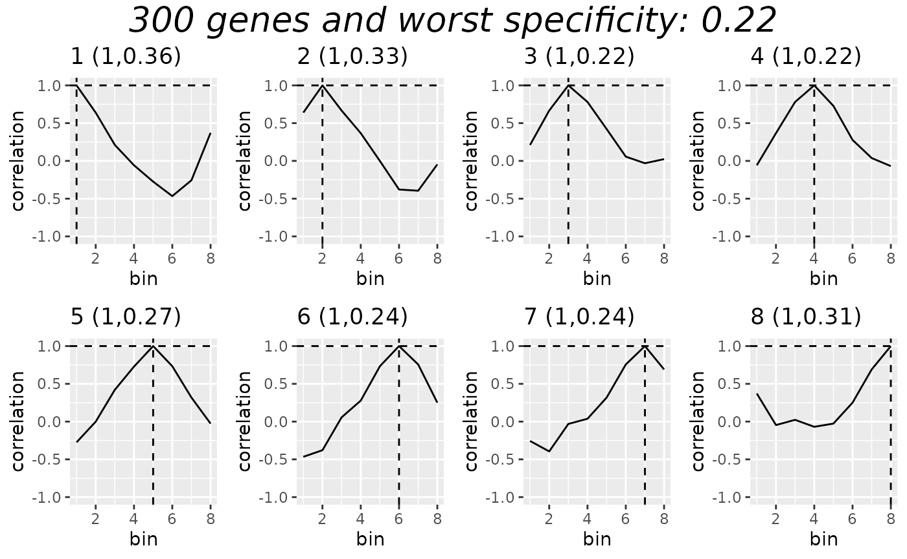

DE With BLASE
DE_with_blase.Rmd
library(readxl)
library(scran)
library(slingshot)
library(tradeSeq)
library(BiocParallel)
library(fs)
library(gridExtra)
library(scater)
library(utils)
library(blase)
library(ami)
library(plyr)
library(scales)
library(reshape2)
RNGversion("3.5.0")
#> Warning in RNGkind("Mersenne-Twister", "Inversion", "Rounding"): non-uniform
#> 'Rounding' sampler used
SEED = 7
set.seed(SEED)
N_CORES = 4
if (ami::using_ci()) {
N_CORES = 2
}In this vignette we will use BLASE to map bulk Plasmodium Falciparum data from an experiment (Zhang et al. 2021) on heat shock response in P. Falciparum, onto the Malaria Cell Atlas (Howick et al. 2019, 7G8 & NF54 strains). We look at Zhang et al’s wild type control data (from the NF54 strain) as well as the knockouts (pb4 and pb31) in this article. The paper reported that the knockouts both handled the heat shock less well than the wild type strain, and that pb31 was most susceptible to heat shock, which we will see in our analysis below.
The controls kept all strains at 37 degrees, whereas the heat shock was applied to each strain as 3 8-hour increases to 41 degrees, simulating malarial fever.
Fetch the data
ext_data_dir <- system.file("extdata", package = "blase")
root_dir = tools::R_user_dir("BLASE", "data")
article_dir = path(root_dir, "DE_with_blase")
if (!dir.exists(article_dir)) {
dir.create(article_dir, recursive = TRUE)
}
bulk_path = path(article_dir, "heat_shock_bulks", ext="xlsx")
if (!file.exists(bulk_path)) {
download.file('https://static-content.springer.com/esm/art%3A10.1038%2Fs41467-021-24814-1/MediaObjects/41467_2021_24814_MOESM5_ESM.xlsx', bulk_path)
}else {
print("Using cached")
}
# FPKM normalised
bulk = as.data.frame(read_excel(bulk_path, range = 'S3A_RNAseq!A4:P2571'))
rownames(bulk) = bulk$`Transcript_ID`
rownames(bulk) = gsub(x=rownames(bulk), pattern="_", replacement="-", fixed=TRUE)
bulk = subset(bulk, , -c(`GeneID`, `Transcript_ID`, `Gene.NameSymbol`, `TranscriptProductDescription`))
genes_to_fix_bulk = rownames(bulk)[!(rownames(bulk) %in% sub(x=rownames(bulk), pattern="\\.[0-9]", replacement=""))]
genes_to_fix_bulk = unique(sub(x=genes_to_fix_bulk, pattern="\\.[0-9]", replacement=""))
new_rows = data.frame()
rownames_to_remove = c()
# Do some pre-work to get colSums quickly
bulk_matrix = data.matrix(bulk)
bulk_n = ncol(bulk_matrix)
for (gene in genes_to_fix_bulk) {
targetRowNames = rownames(bulk)[grep(x=rownames(bulk), pattern=gene)]
rownames_to_remove = c(rownames_to_remove, targetRowNames)
# N = col index, M = row index
counts = .colSums(bulk_matrix[targetRowNames,], m=length(targetRowNames), n=bulk_n)
counts = t(data.frame(counts=counts))
rownames(counts) = c(gene)
colnames(counts) = colnames(bulk)
new_rows = rbind(new_rows, counts)
}
bulk = bulk[ !(rownames(bulk) %in% rownames_to_remove), ]
bulk = rbind(bulk, new_rows)
genes_to_fix_bulk = rownames(bulk)[!(rownames(bulk) %in% sub(x=rownames(bulk), pattern="\\.[0-9]", replacement=""))]
genes_to_fix_bulk = unique(sub(x=genes_to_fix_bulk, pattern="\\.[0-9]", replacement=""))
print(paste("Remaining genes with dups:", genes_to_fix_bulk))
#> [1] "Remaining genes with dups: "
rm (new_rows, rownames_to_remove, bulk_matrix, bulk_n, genes_to_fix_bulk, counts)
gc()
#> used (Mb) gc trigger (Mb) max used (Mb)
#> Ncells 7916020 422.8 11593821 619.2 10952588 585.0
#> Vcells 13912033 106.2 21681406 165.5 18001140 137.4Prepare SC
We are using the Malaria Cell Atlas data which we have pre-processed (here)[articles/generate-MCA-pf-object.html]. This data is available for your to experiment with as part of the package.
data(processed_MCA_PF_SCE, package="blase")
gridExtra::grid.arrange(
plotPCA(processed_MCA_PF_SCE, colour_by="STAGE_LR"),
plotUMAP(processed_MCA_PF_SCE, colour_by="STAGE_LR"),
plotPCA(processed_MCA_PF_SCE, colour_by="DAY"),
plotUMAP(processed_MCA_PF_SCE, colour_by="DAY"),
plotPCA(processed_MCA_PF_SCE, colour_by="STRAIN"),
plotUMAP(processed_MCA_PF_SCE, colour_by="STRAIN"),
plotPCA(processed_MCA_PF_SCE, colour_by="slingPseudotime_1"),
plotUMAP(processed_MCA_PF_SCE, colour_by="slingPseudotime_1"),
ncol=2
)
associationTestResult <- associationTest(processed_MCA_PF_SCE, lineages=T, global=F, contrastType="consecutive")Prepare BLASE
We prepare BLASE by checking for a good number of genes and bins.
genelist = blase::get_top_n_genes(associationTestResult, n_genes = 500, lineage = 1)
res = find_best_params(processed_MCA_PF_SCE,
genelist,
split_by="pseudotime_range",
pseudotime_slot="slingPseudotime_1",
bins_count_range = c(6, 8, 10),
gene_count_range = seq.int(250, 340, 3))
plot_find_best_params_results(res)
#cat(gsub(x=paste0("", genelist), pattern="-", replacement = "_"), sep = "\n")
#waves = blase::get_waves(processed_MCA_PF_SCE)
#waves[c("PF3D7-0831700","PF3D7-1116800"),]
#blase::gene_selection_matrix(processed_MCA_PF_SCE, genes=c(
# "PF3D7-0831700",
# "PF3D7-1116800",
# "PF3D7-1014100",
# "PF3D7-0303200",
# "PF3D7-0701900"
# ), waves=waves, target_matrix_size=5)
#length(genelist)
#genelist = genelist[!(genelist %in% c("PF3D7-0831700","PF3D7-1116800"))]
#length(genelist)
genes = 300
bins = 8
blaseData = as.BlaseData(processed_MCA_PF_SCE, pseudotime_slot="slingPseudotime_1", n_bins=bins, split_by="pseudotime_range")
blaseData@genes = genelist[1:genes]
evaluate_parameters(blaseData, make_plot = TRUE)
#> [1] 0.219500 0.274575
processed_MCA_PF_SCE = assign_pseudotime_bins(processed_MCA_PF_SCE, pseudotime_slot="slingPseudotime_1", n_bins=bins, split_by="pseudotime_range")
plotUMAP(processed_MCA_PF_SCE, color="pseudotime_bin")
gridExtra::grid.arrange(
plotUMAP(processed_MCA_PF_SCE, color="STAGE_LR"),
plotUMAP(processed_MCA_PF_SCE, color="pseudotime_bin"),
ncol=2
)
#waves = get_waves(processed_MCA_PF_SCE, n_cores = N_CORES)
#fourier_genes = blase::select_genes_by_fourier_method(processed_MCA_PF_SCE, waves, n_groups=100, top_n_per_group=5)
#fourier_genes
#gene_selection_matrix(processed_MCA_PF_SCE, waves, genes=rownames(fourier_genes), target_matrix_size=90)
#dim(fourier_genes)
#fourier_genes = fourier_genes[ !(rownames(fourier_genes) %in% c("PF3D7-0831700","PF3D7-1116800", "PF3D7_0201800")), ]
#dim(fourier_genes)
#blaseData@genes = rownames(fourier_genes)
#cat(gsub(x=paste0("", rownames(fourier_genes)), pattern="-", replacement = "_"), sep = "\n")And we can see these genes arranged over pseudotime:
waves = get_waves(processed_MCA_PF_SCE)
gene_selection_matrix(processed_MCA_PF_SCE, waves, genes=blaseData@genes, target_matrix_size=length(unique(blaseData@genes)))Map Bulk data onto Single Cell
Now we can map the bulk data onto the single cell.
mapping_results = c()
for (bulkname in colnames(bulk)) {
res = map_best_bin(blaseData, bulkname, bulk)
mapping_results = c(mapping_results, res)
}
blase::plot_mapping_result_heatmap(rev(mapping_results), annotate = TRUE)We can see the wild type develops more normally than the 2 knockouts, who show delayed growth generally, and less of a response to the heat shock (41 degrees).
# Wildtype
gridExtra::grid.arrange(
blase::plot_mapping_result_heatmap(rev(mapping_results[1:2]), annotate = TRUE), # 1
blase::plot_mapping_result_heatmap(rev(mapping_results[3:4]), annotate = TRUE), # 2
blase::plot_bin_population(processed_MCA_PF_SCE, 2, group_by_slot="STAGE_LR"), # 1
blase::plot_bin_population(processed_MCA_PF_SCE, 4, group_by_slot="STAGE_LR"), # 2
blase::plot_bin_population(processed_MCA_PF_SCE, 3, group_by_slot="STAGE_LR"), # 1
blase::plot_bin_population(processed_MCA_PF_SCE, 4, group_by_slot="STAGE_LR"), # 2
ncol=2
)
# pb4 knockout
gridExtra::grid.arrange(
blase::plot_mapping_result_heatmap(rev(mapping_results[5:6]), annotate = TRUE), # 1
blase::plot_mapping_result_heatmap(rev(mapping_results[7:8]), annotate = TRUE), # 2
blase::plot_bin_population(processed_MCA_PF_SCE, 2, group_by_slot="STAGE_LR"), # 1
blase::plot_bin_population(processed_MCA_PF_SCE, 3, group_by_slot="STAGE_LR"), # 2
ggplot() + theme_void(), # 1
ggplot() + theme_void(), # 2
ncol=2
)
# pb31 knockout
gridExtra::grid.arrange(
blase::plot_mapping_result_heatmap(rev(mapping_results[9:10]), annotate = TRUE), # 1
blase::plot_mapping_result_heatmap(rev(mapping_results[11:12]), annotate = TRUE), # 2
blase::plot_bin_population(processed_MCA_PF_SCE, 1, group_by_slot="STAGE_LR"), # 1
blase::plot_bin_population(processed_MCA_PF_SCE, 3, group_by_slot="STAGE_LR"), # 2
blase::plot_bin_population(processed_MCA_PF_SCE, 2, group_by_slot="STAGE_LR"), # 1
ggplot() + theme_void(), #2
ncol=2
)Cibersort Analysis for comparison
Cibersortx is another tool which could be used for this kind of analysis. Let’s see how it performs compared to BLASE. Below is code for producing the files we used to analyse with cibersortx.
cibersort_bulk = bulk
rownames(cibersort_bulk) = gsub(x=rownames(cibersort_bulk), pattern="-", replacement = ".")
colnames(cibersort_bulk) = gsub(x=colnames(cibersort_bulk), pattern="_", replacement = ".")
cibersort_bulk = cbind(genes = rownames(cibersort_bulk), cibersort_bulk, row.names = NULL)
cibersort_sc = normcounts(processed_MCA_PF_SCE)
rownames(cibersort_sc) = gsub(x=rownames(cibersort_sc), pattern="-", replacement = ".")
colnames(cibersort_sc) = processed_MCA_PF_SCE@colData$pseudotime_bin
cibersort_sc = cbind(genes = rownames(cibersort_sc), cibersort_sc, row.names = NULL)
all(colnames(normcounts(processed_MCA_PF_SCE)) == rownames(processed_MCA_PF_SCE@colData))
#write.table(cibersort_bulk, file = path(ext_data_dir, "cibersort_bulk_de", ext = "tsv"), sep = "\t", row.names=FALSE, col.names=TRUE)
#write.table(cibersort_sc, file = path(ext_data_dir, "cibersort_bulk_de", ext = "tsv"), sep = "\t", row.names=FALSE, col.names=TRUE)After analysing with cibersortx, using default settings, and 100 iterations for confidence, the results are given in this file.
path_to_cibersort_results = path(ext_data_dir, "CIBERSORTX_Job6_Results", ext = "csv")
cibersort_results = read.csv(path_to_cibersort_results, row.names=1)
usethis::use_data(cibersort_results, overwrite = TRUE, compress = "bzip2")
data(cibersort_results, package="blase")
cibersort_results_calls = cibersort_results[c('X1', 'X2', 'X3', 'X4', 'X5', 'X6', 'X7', 'X8')]
cibersort_results_quality = cibersort_results[c('P.value', 'Correlation', 'RMSE')]
to_plot = cibersort_results_calls
to_plot$BulkID <- rownames(cibersort_results_calls)
to_plot <- melt(to_plot)
#> Using BulkID as id variables
p1=ggplot(to_plot, aes(variable, BulkID)) +
geom_tile(aes(fill = value), colour = "white") +
geom_text(aes(label = round(value, 2))) +
scale_fill_gradient(low = "white", high = "red")
cibersort_results_quality
#> P.value Correlation RMSE
#> NF54.37.1 0.000 0.5532917 0.8397524
#> NF54.37.2 0.000 0.6473308 0.7613124
#> NF54.41.1 0.002 0.4462049 0.8981939
#> NF54.41.2 0.000 0.5132402 0.8573064
#> PB4.37.1 0.016 0.2557316 1.0402395
#> PB4.37.2 0.002 0.4571447 0.9316534
#> PB4.41.1 0.008 0.3261011 0.9661929
#> PB4.41.2 0.000 0.5606378 0.8267468
#> PB31.37.1 0.010 0.2952220 1.0186639
#> PB31.37.2 0.004 0.3734311 0.9527463
#> PB31.41.1 0.004 0.3766381 0.9350215
#> PB31.41.2 0.002 0.4365190 0.9024954
to_plot = cibersort_results_quality
to_plot$BulkID <- rownames(cibersort_results_quality)
to_plot <- melt(to_plot)
#> Using BulkID as id variables
to_plot <- ddply(to_plot, .(variable), transform, rescale = rescale(value))
p2=ggplot(to_plot, aes(variable, BulkID)) +
geom_tile(aes(fill = rescale), colour = "white") +
geom_text(aes(label = round(value, 3))) +
scale_fill_gradient(low = "white", high = "red")
p1
p2
Session Info
sessionInfo()
#> R version 4.3.3 (2024-02-29)
#> Platform: x86_64-pc-linux-gnu (64-bit)
#> Running under: Ubuntu 22.04.4 LTS
#>
#> Matrix products: default
#> BLAS: /usr/lib/x86_64-linux-gnu/openblas-pthread/libblas.so.3
#> LAPACK: /usr/lib/x86_64-linux-gnu/openblas-pthread/libopenblasp-r0.3.20.so; LAPACK version 3.10.0
#>
#> Random number generation:
#> RNG: Mersenne-Twister
#> Normal: Inversion
#> Sample: Rounding
#>
#> locale:
#> [1] LC_CTYPE=C.UTF-8 LC_NUMERIC=C LC_TIME=C.UTF-8
#> [4] LC_COLLATE=C.UTF-8 LC_MONETARY=C.UTF-8 LC_MESSAGES=C.UTF-8
#> [7] LC_PAPER=C.UTF-8 LC_NAME=C LC_ADDRESS=C
#> [10] LC_TELEPHONE=C LC_MEASUREMENT=C.UTF-8 LC_IDENTIFICATION=C
#>
#> time zone: UTC
#> tzcode source: system (glibc)
#>
#> attached base packages:
#> [1] stats4 stats graphics grDevices utils datasets methods
#> [8] base
#>
#> other attached packages:
#> [1] reshape2_1.4.4 scales_1.3.0
#> [3] plyr_1.8.9 ami_0.1.0
#> [5] blase_0.0.0.9000 scater_1.30.1
#> [7] ggplot2_3.5.0 gridExtra_2.3
#> [9] fs_1.6.3 BiocParallel_1.36.0
#> [11] tradeSeq_1.16.0 slingshot_2.10.0
#> [13] TrajectoryUtils_1.10.1 princurve_2.1.6
#> [15] scran_1.30.2 scuttle_1.12.0
#> [17] SingleCellExperiment_1.24.0 SummarizedExperiment_1.32.0
#> [19] Biobase_2.62.0 GenomicRanges_1.54.1
#> [21] GenomeInfoDb_1.38.7 IRanges_2.36.0
#> [23] S4Vectors_0.40.2 BiocGenerics_0.48.1
#> [25] MatrixGenerics_1.14.0 matrixStats_1.2.0
#> [27] readxl_1.4.3
#>
#> loaded via a namespace (and not attached):
#> [1] pbapply_1.7-2 rlang_1.1.3
#> [3] magrittr_2.0.3 compiler_4.3.3
#> [5] mgcv_1.9-1 DelayedMatrixStats_1.24.0
#> [7] systemfonts_1.0.6 vctrs_0.6.5
#> [9] stringr_1.5.1 pkgconfig_2.0.3
#> [11] crayon_1.5.2 fastmap_1.1.1
#> [13] backports_1.4.1 XVector_0.42.0
#> [15] labeling_0.4.3 utf8_1.2.4
#> [17] rmarkdown_2.26 ggbeeswarm_0.7.2
#> [19] ragg_1.3.0 purrr_1.0.2
#> [21] xfun_0.42 bluster_1.12.0
#> [23] zlibbioc_1.48.0 cachem_1.0.8
#> [25] beachmat_2.18.1 jsonlite_1.8.8
#> [27] highr_0.10 DelayedArray_0.28.0
#> [29] irlba_2.3.5.1 parallel_4.3.3
#> [31] cluster_2.1.6 R6_2.5.1
#> [33] stringi_1.8.3 bslib_0.6.1
#> [35] RColorBrewer_1.1-3 limma_3.58.1
#> [37] jquerylib_0.1.4 cellranger_1.1.0
#> [39] Rcpp_1.0.12 knitr_1.45
#> [41] Matrix_1.6-5 splines_4.3.3
#> [43] igraph_2.0.3 tidyselect_1.2.1
#> [45] abind_1.4-5 yaml_2.3.8
#> [47] viridis_0.6.5 codetools_0.2-19
#> [49] lattice_0.22-5 tibble_3.2.1
#> [51] withr_3.0.0 evaluate_0.23
#> [53] desc_1.4.3 pillar_1.9.0
#> [55] checkmate_2.3.1 generics_0.1.3
#> [57] metR_0.15.0 sparseMatrixStats_1.14.0
#> [59] munsell_0.5.0 glue_1.7.0
#> [61] metapod_1.10.1 tools_4.3.3
#> [63] data.table_1.15.2 BiocNeighbors_1.20.2
#> [65] ScaledMatrix_1.10.0 locfit_1.5-9.9
#> [67] cowplot_1.1.3 grid_4.3.3
#> [69] edgeR_4.0.16 colorspace_2.1-0
#> [71] nlme_3.1-164 GenomeInfoDbData_1.2.11
#> [73] beeswarm_0.4.0 BiocSingular_1.18.0
#> [75] vipor_0.4.7 cli_3.6.2
#> [77] rsvd_1.0.5 textshaping_0.3.7
#> [79] fansi_1.0.6 S4Arrays_1.2.1
#> [81] viridisLite_0.4.2 rematch_2.0.0
#> [83] dplyr_1.1.4 gtable_0.3.4
#> [85] sass_0.4.8 digest_0.6.35
#> [87] ggrepel_0.9.5 SparseArray_1.2.4
#> [89] dqrng_0.3.2 farver_2.1.1
#> [91] memoise_2.0.1 htmltools_0.5.7
#> [93] pkgdown_2.0.7 lifecycle_1.0.4
#> [95] statmod_1.5.0